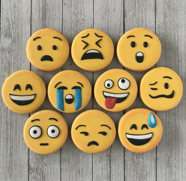
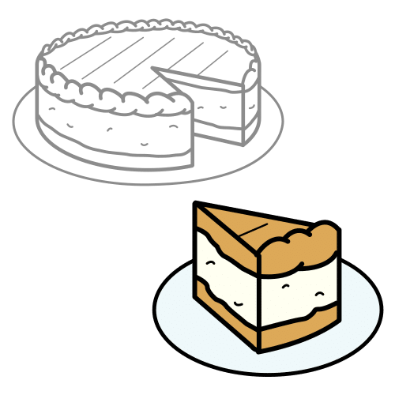

Diccionario
Emoji
 Definición:
Pequeña imagen o icono digital que se usa en las comunicaciones electrónicas para representar una emoción, un objeto, una idea, etc.
Ejemplo:
Utilizo muchos emojis cuando hablo con mis amigos por redes.
Escalofrío
Definición:
Sensación de frío intensa y repentina acompañada de un ligero temblor del cuerpo, generalmente producida por un cambio brusco de temperatura, por la fiebre o por una fuerte emoción o miedo.
Ejemplo:
Sintió un ligero escalofrío de miedo.
Exposición Oral
Definición:
Exposición o discurso que se hace en voz alta ante un público.
Ejemplo:
En clase hicimos una exposición oral sobre los seres vivos.
Fragmento
 Definición:
Parte pequeña de alguna cosa.
Ejemplo:
Óscar solo leyó un fragmento del cuento de Pinocho.
Iconos
Definición:
Pictograma o dibujo que es utilizado para representar algo.
Ejemplo:
Me encantan los iconos del nuevo móvil.
Oferta turística
Definición:
Una oferta turística es una combinación de servicios y productos que se presentan para su consideración por un cliente que desea realizar un viaje turístico.
Ejemplo:
En París hay una gran oferta turística ya que podemos visitar museos, monumentos, teatros, restaurantes…
Reacción
 Definición:
Definición:
Las personas reaccionan de forma diferente ante sentimientos y emociones como la alegría, el miedo, el enfado… Algunas personas lloran, otras gritan, otras tiemblan, etc. Esas son reacciones normales que todos podemos tener.
Ejemplo:
En mi cumpleaños me regalaron una Tablet, era lo que más deseaba y reaccioné llorando de emoción.
Representar
 Definición:
Definición:
Hacer presente algo con palabras o figuras.
Ejemplo:
El niño representó su felicidad con una carita contenta
Secuencia
 Definición:
Definición:
Serie de elementos que se suceden unos a otros y guardan relación entre sí.
Ejemplo:
Ayer hice una secuencia de fotos espectacular sobre las abejas.
Victoria
 Definición:
Definición:
Hecho de vencer o ganar una competición o una lucha.
Ejemplo:
Los jugadores festejaron su victoria.
Vivencias
 Definición:
Definición:
Experiencia o suceso que vive una persona y que contribuye a su personalidad.
Ejemplo:
Recuerdo las vivencias de cuando era niño con mucha alegría.


 Definición:
Definición: Definición:
Definición:
 Definición:
Definición: Definición:
Definición: